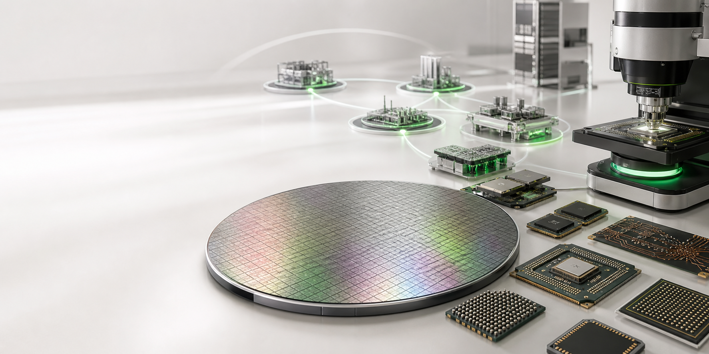

HOLYCORES seeks semiconductor partners who advance open compute through engineering transparency, consistent quality and long-term collaboration.Become a supplier →

PARTNERSHIP SCOPE
From materials and IP to complete systems.
Advanced compute depends on specialized collaboration. We build supplier relationships around technical fit, lifecycle, risk and joint validation—not a single purchase price.
01
Foundry and process
Manufacturing processes, masks, wafer test and engineering collaboration.
02
Packaging and test
Advanced packaging, substrates, interconnects, thermal materials and reliability.
03
IP, EDA and design
Compute, memory, interface and security IP, tools, verification and signoff.
04
Memory and components
Memory, flash, networking, timing, power, sensing and critical system devices.
SUPPLIER EXPECTATIONS
Collaboration begins with shared standards.
Requirements are tiered by component risk, environment and product phase.
QUALITY
Quality capability
Design and process change control
Traceability and issue closure
Reliability and failure analysis
DELIVERY
Delivery and resilience
Capacity and lifecycle transparency
Continuity and recovery plans
Critical-risk management
ENGINEERING
Joint engineering
Clear interfaces and owners
Fast sample and data collaboration
Design-in and optimization support
TRUST
Compliance and integrity
Applicable law and trade rules
IP and information protection
Anti-bribery and conflict controls
QUALITY THROUGH THE LIFECYCLE
Quality is a visible process, not a one-time audit.
Supplier quality begins with product definition and continues through design-in, samples, pilot, production, change and end-of-life management.
QualificationCapability, systems, roadmap and continuity
Design-inSpecifications, risks, samples and validation
Production readinessProcess capability, traceability and release criteria
ImprovementPerformance review, root cause and prevention
RESPONSIBLE SUPPLY CHAIN
Technology, business and responsibility move together.
We expect partners to respect people, protect the environment, maintain safe workplaces and conduct business with integrity.
Health and safetyLabor and inclusionEnvironment and resourcesResponsible mineralsBusiness ethicsData and intellectual property
ENGAGEMENT PROCESS
From capability fit to long-term collaboration.
Submitting information does not confer supplier status. Evaluation follows actual needs and risk level.
01
Register
Share products, technology, locations, quality systems and contacts.
→02
Match
Assess fit with roadmap, technical needs and timing.
→03
Validate
Tiered technical, quality, compliance, security and risk review.
→04
Design in
Samples, qualification, performance management and improvement.
SUPPLIER ENGAGEMENT
Bring your capability to next-generation compute.
Include your company profile, portfolio, differentiators, quality system, manufacturing locations and proposed collaboration. Do not send restricted or highly confidential information in the first contact.supply@holycores.com →